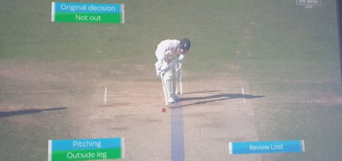
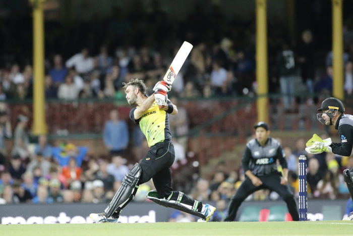
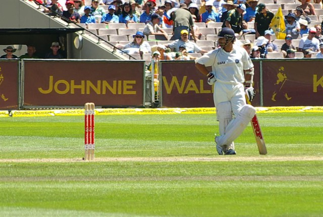
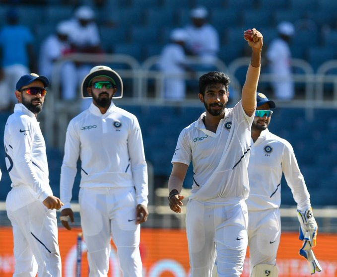

SPORTS WORLD
Cricket Blogs
-
5 Reasons Why Changing the LBW Laws would be a Poor Move

As I get ready for another Monday with coffee in hand, I stare in disbelief at my computer screen. Sitting there, I am wondering if ESPNCricinfo are so out of ideas during the COVID-19 pandemic that they have turned to satirical articles. But, I realise that ESPNCricinfo don’t really do satirical articles. Plus, Ian Chappell isn’t the kind of guy to write them. Chappell, a tough cricketer and possessor of one of the finest minds of the game, has suggested cricket changes its LBW laws once it returns. Specifically, he says that it shouldn’t matter where the ball pitches or hits the batsman; if the umpire thinks it’ll hit the stumps, you’re out. Read More... -
How to use Dream11 Skills to Dominate Cricket Manager 2020
There is no doubt that Fantasy Platforms such as Dream11 have changed the way we engage with cricket. Building up skill and experience is vital for Dream11 players, which involves extensive research, understanding the best players for certain conditions and thinking strategically. As a result, the rise of fantasy cricket has had a profound impact on how we view player performances. And, of course, if you perform well, it provides a bit of an ego boost! But, in these times where cricket has come to a standstill due to COVID-19, how could you still put those Dream11 skills to good use? Introducing Cricket Manager 2020. Formally known as Cricket Tycoon, Cricket Manager 2020 is an innovative, interactive and strategic Cricket Manager game, compatible on both iOS and Android. Read More... -
Pros and Cons of the Rise of T20 Cricket

Pros and Cons of the Rise of T20 Cricket | What’s the most popular format of cricket? | Advantages and disadvantages of T20 Cricket T20 Cricket is without any doubt the most popular form of the game in the modern era. It has grown so rapidly that every country now has its own T20 league, with the cricketing world indeed a world away from what it was 15-20 years ago. T20 cricket’s rapid growth and the significant change in the nature of the sport has its pros and cons. Here, we will look at three pros and three cons of the growth of T20 cricket, and what this may mean for the future of the game. Read More... -
10 Cricket Records unlikely to be broken anytime soon

Cricket is a numbers game as much as it is a mental battle. We cricket fans are obsessed with numbers, no matter how much we like or dislike math class. After all, cricket provides interesting mathematics that forms the basis for most arguments. From averages to big totals to magnificent individual achievements, I will explore 10 cricket records that are unlikely to be broken anytime soon. Given the cricketing world moves at such a fast pace these days (remember the 2019 World Cup, anyone), “anytime soon” could mean 5-10 years from now. Read More... -
What makes Jasprit Bumrah so special?

Jasprit Bumrah has it on a string. In Antigua, the first Test of India’s 2019 tour of West Indies, India’s premier bowler had the inswinger on point to the left handers. Just days later in Jamaica, he had the ball going the other way, with minimal change in action or body position. Like Antigua, he’s too good for the West Indies batsmen. Poor John Campbell and Darren Bravo are caught behind the wicket having not done too much wrong. After Bravo is dismissed, it is pure chaos. The ball cannons into both Shamarh Brooks and Roston Chase’s front pads. Most, including Bumrah, thought the hat-trick ball to Chase was heading down the legside. However, Virat Kohli decided to review with great effect, with Bumrah becoming the third Indian to take a Test hat-trick. In just his 12th Test. Read More...
About Us
365 Sector-4,Hiran Magri,Udaipur (Rajasthan) Pin-code: 313329